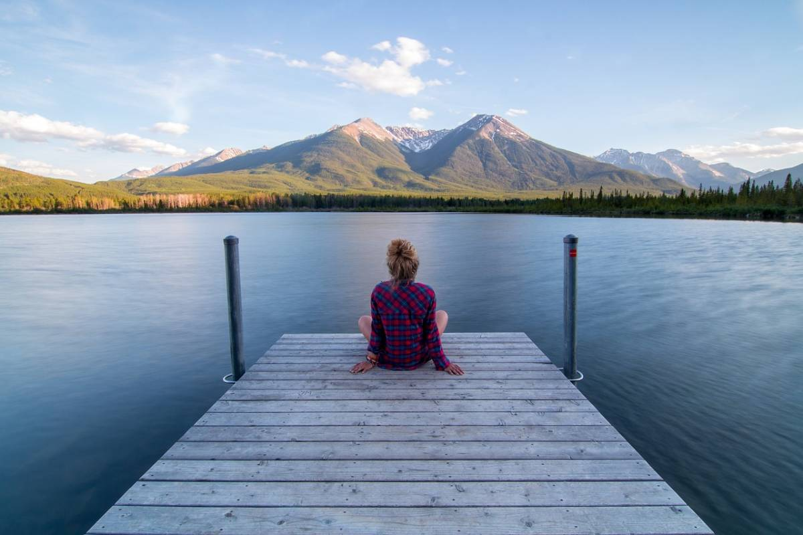
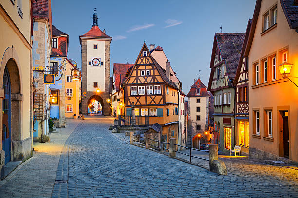
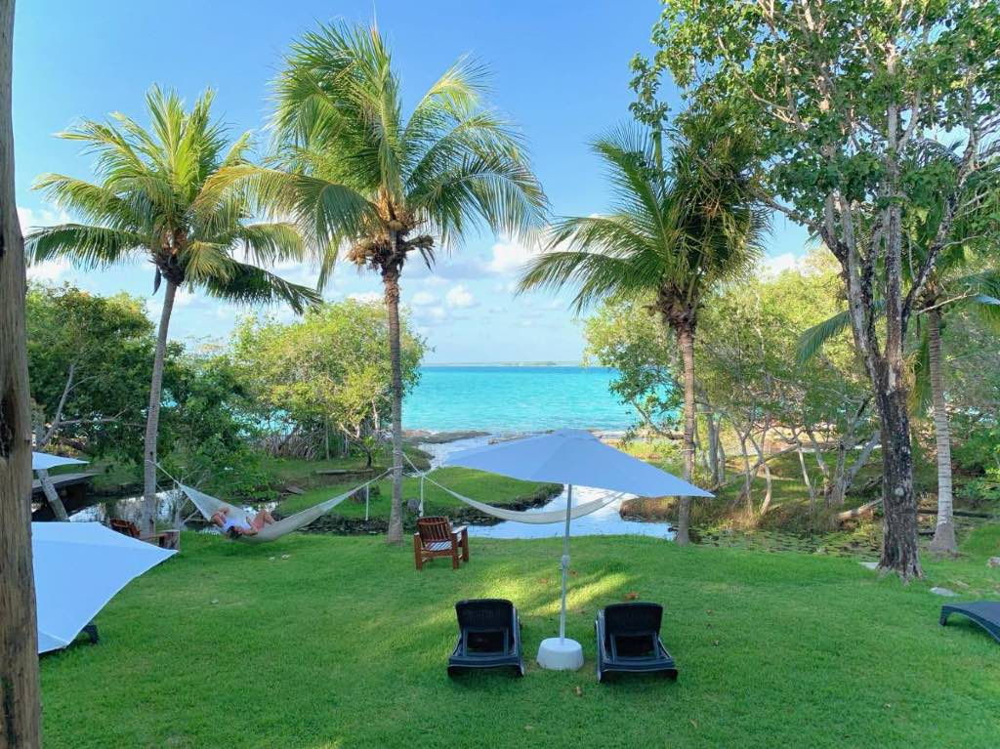
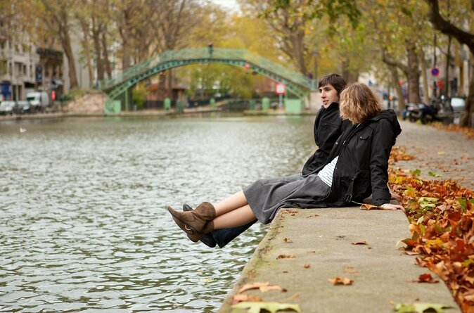
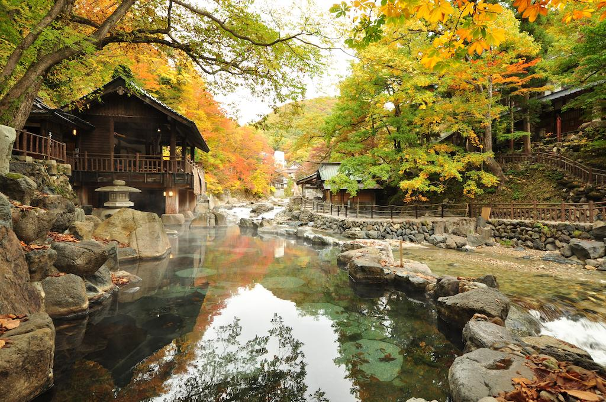

|  |  |  |
AlemaniaEn alemania ay un maravilloso lugar llamdo Rotemburgo es una encantadora ciudad medieval cuenta con casas de entramano de madera y calles estrechas que evocan la epoca medieval la ciudad es famosa por su ambiente pintoresco y su rica historia |
|
ParísImaginat esto una tarde soleada en Paris el aire fresco del Canal de Saint-Martin y atu lado una deliciosa pizza slida del horno para acompañar una servesa bien fria que reslta los sabores de la pizza , Todo esto mientras observas los barcos q pasan lentamente por el canal y disfrutas de la animada admosfera parisina q te rodea. |
 |
|  |
Tokio(japon)Preparate para una experiencia rejuvenedora y relajante en Kaga Osen situado en la prefectura de Ishikawa, Japon,Kaga Onsen es un destino de aguas termales que cautiva los sentidos y revitaliza el espiritu. sumergete en las calidad aguas termales naturales , e explora los pintorscos paisajes de la region |